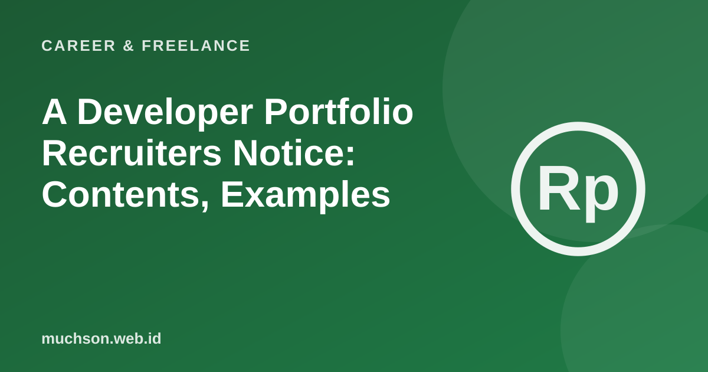

Home › Articles › Career & Freelance
Career & FreelanceA Developer Portfolio Recruiters Notice: Contents, Examples
Recruiters and prospective clients usually scan a portfolio quickly. They look for answers to three things: who you are, what you can do and the proof. A good portfolio answers all three in a few minutes.

What belongs on the front page
Text description of the diagram
- A one-sentence statement: Your role, main skill and the value you give
- 3-6 chosen projects: With results, not just a list of technologies
- Live proof: A demo that can be tried and code that can be read
- How to reach you: Easy to find and not convoluted
Writing a case study
A list of technologies alone says nothing about how you think. For each project, tell briefly:
- The problem and the user. What was solved, for whom?
- Your role. What did you do alone and what did the team do?
- Key decisions. Technical choices, the reasons and the alternatives rejected.
- Results. Figures you can stand behind, or a real user's story.
- Lessons. What would you change if you did it again?
Mistakes that often happen
A valuable extra
Writing articles about what you learn shows how you think and makes you easier to find in search engines.
FAQ
How many projects are ideal?
Three to six of the best. Quality and the explanation matter more than the number.
Is GitHub enough as a portfolio?
GitHub is good for code, but a busy recruiter prefers a concise page that tells the results with links to the code.
What if I have no work projects yet?
Build a project that solves a real problem, for example a tool for a community or a small business, and explain your decisions.